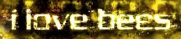

Projects
Securely aggregate all your various forms of money and easily pay back your friends and family, using just one mobile app. CSE 440 (Intro to HCI) class project at UW. Interactive prototype only.
An accessible casual music game for Android mobile phones. CSE481H (Accessibility Capstone) class project at UW. Poster presentation at ASSETS 2011 (poster, paper).
A video compression project at UW with the goal of making wireless cell phone communication through sign language a reality in the U.S. I helped develop the user interface and run a pilot user study. Work in progress at CHI 2011 (poster, paper).

I conducted a case study during the I Love Bees Alternate Reality Game where a player's interaction with a game character upset the existing overall goals of the group. Independent study with Brian Landry (paper).
Publications
- Kim, J., Cheng, J. & Bernstein, M. (2014). Exploring Complementary Strengths of Leaders and Crowds in Creative Collaboration. To appear at CSCW 2014.
- J. Kim, J. Ricaurte, "TapBeats: Accessible and Mobile Casual Gaming," Proceedings of ASSETS 2011: The 13th International ACM SIGACCESS Conference on Computers and Accessibility, Dundee, Scotland, October 24-26, 2011. New York: ACM Press, pp. 285-285.
- J. Tran, J. Kim, J. Chon, E. Riskin, R. Ladner, and J. Wobbrock," Evaluating Quality and Comprehension of Real-Time Sign Language Video on Mobile Phones," Proceedings of ASSETS 2011: The 13th International ACM SIGACCESS Conference on Computers and Accessibility, Dundee, Scotland, UK, October 24-26, 2011. New York: ACM Press, pp. 115-122.
- Kim, J., Tran, J.J., Johnson, T.W., Ladner, R., Riskin, E. and Wobbrock, J.O. (2011). Effect of MobileASL on communication among deaf users. Extended Abstracts of the ACM Conference on Human Factors in Computing Systems (CHI '11). New York: ACM Press.
- J. Tran, T. Johnson, J. Kim, R. Rodriguez, S. Yin, E. Riskin, R. Ladner, and J. Wobbrock, “A Web-Based User Survey for Evaluating Power Saving Strategies for Deaf Users of MobileASL,” Proceedings of ASSETS 2010: The 12th International ACM SIGACCESS Conference on Computers and Accessibility, Orlando, FL, October 25-27, 2010.
Awards
- Brown Institute Magic Grant, 2013
- NSF Graduate Research Fellowship, 2011
- Mary Gates Research Scholarship, University of Washington, 2011
- Honorable Mention, Computer Research Association (CRA) Outstanding Undergraduate Researcher Award, 2011
Bio
Currently, I am a third-year PhD student in computer science at Stanford University. In 2011, I received my BS in Computer Science at the University of Washington, where I discovered my interest in human-computer interaction research working on the MobileASL project with advisors Richard Ladner, Eve Riskin, and Jake Wobbrock. My research interests are in social computing and creativity on the web.
In my spare time, I love to paint and draw! I was one of the original founding members of the Graphic Novel Society at UW and served as its president from 2008 to 2011. I'm a big fan of comics and graphic novels of all kinds, and I run my own webcomic called Herogirl Comics.